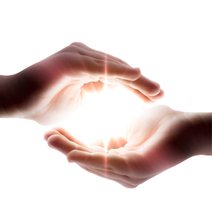
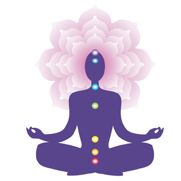
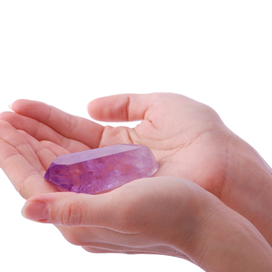
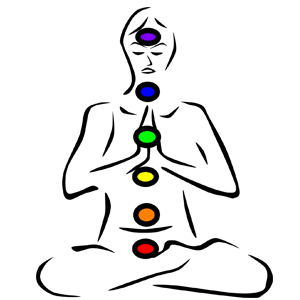

Reiki Healing
Reiki is a therapy often described as palm healing or hands-on-body healing in which a practitioner places hands lightly on or over a patient's body to facilitate the patient's process of healing.
Reiki combines the Japanese and Chinese word-characters of "rei" (spiritual or supernatural) and "ki" (vital energy).
One of the basic ideas held by those who practice Reiki is that this vital energy can be channeled to support the body's natural ability to heal itself,
.
Pranic Healing
Pranic Healing is a highly evolved and tested system of energy medicine that utilizes prana to balance,
harmonize and transform the body's energy processes. Prana is a Sanskrit word that means life-force.
This invisible bio-energy or vital energy keeps the body alive and maintains a state of good health. In acupuncture, the Chinese refer to this subtle energy as Chi.
It is also called Ruach or the Breath of Life in Hebrew.

Meditation
Meditation can help us to understand our own mind. We can learn how to transform our mind from negative to positive,
from disturbed to peaceful, from unhappy to happy. Overcoming negative minds and cultivating constructive thoughts is the purpose of the transforming meditations.
This is a profound spiritual practice you can enjoy throughout the day, not just while seated in meditation.
Crystal Healing
Crystal healing is an alternative medical technique in which crystals and other stones are used to cure ailments and protect against disease.
Proponents of this technique believe that crystals act as conduits for healing — allowing positive, healing energy to flow into the body as negative, disease-causing energy flows out.
But despite the fact that crystal healing has seen an upsurge in popularity in recent years, this alternative treatment is not popular with most medical doctors and scientists, many of whom refer to crystal healing as a pseudoscience. Scientifically speaking,
there is no evidence that crystal healing can be used to cure diseases, because diseases have never been found to be the result of a so-called energy flow in the body.
Furthermore, no scientific studies have shown that crystals and gems can be differentiated by chemical composition or color to treat a particular ailment.


Chakra Healing
Chakras are Entry Gates of the Aura.
Within the physical body resides a body double, a spiritual body, that contains the Chakras.
The word Chakra in Sanscrit translates to wheel or disc.
They are centres of activity that receives, assimilates and expresses life force energy. They are responsible for the person's physical, mental, and spiritual functions.
They absorb and transmit energies to and from the universe, nature, celestial entities, from people even from things.
Aura Reading
Aura readings look at your spiritual energy system as represented in the seven layers of your aura.
Along with colors, a reader may see memory pictures, symbolic images, spiritual beings and usually energies belonging to others--like friends and family members.
They will also be able to help you answer questions like what color is my aura, the meaning of green aura color meaning and what is my aura definition.
Readings can help you identify and release blocks. Readings also help you get in touch with your own energy, so you can know your own truth and make the highest choices for yourself.